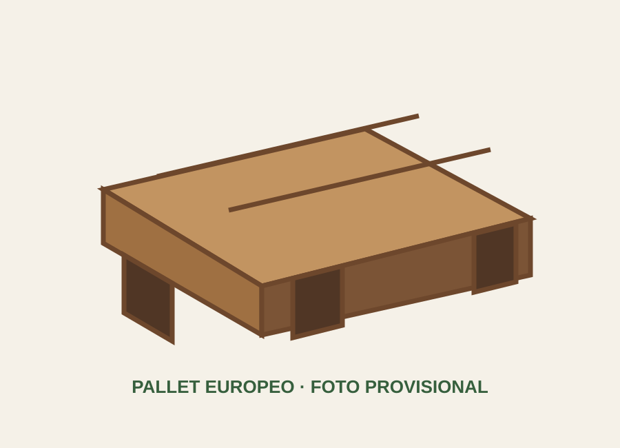

Descripción
Formato compacto utilizado en diversas cadenas logísticas. Esta ficha será completada con las especificaciones técnicas definitivas de EMBAPALLETS.
Características preliminares
| Formato | 80 × 120 cm |
| Material | Madera; especificación pendiente |
| Capacidad | Pendiente de validación técnica |
| Configuración | Pendiente de validación técnica |
Aplicaciones
Almacenamiento y transporte cuando se requiere compatibilidad con este formato.